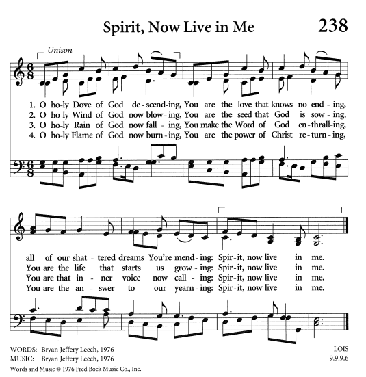
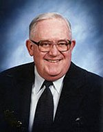

|
|
【聖靈今居我心】 |
|
Verse 1 |
啊！聖潔靈像鴿從天降， |
|
https://fbca.net/wp-content/uploads/2020/05/Spirit-Now-Live-in-Me.pdf  |
|
|
|
|

| Text: | Spirit, Now Live in Me |
| Author: | Bryan Jeffrey Leech |
| Tune: | LOIS |
| Composer: | Bryan Jeffrey Leech |
| Short Name: | Bryan Jeffery Leech |
| Full Name: | Leech, Bryan Jeffery, 1931- |
| Birth Year: | 1931 |
Bryan Jeffrey Leech

was born in Middlesex, England in 1931. He came to the United States in 1955 and studied at Barrington College and North Park Seminary. He was ordained in 1961 and served in the Covenant Church. He composed more than 500 songs.
Dianne Shapiro
Bryan Jeffery Leech 1931 — 2015
gathered by Royce Eckhardt
Bryan Jeffery Leech

Bryan Jeffery Leech was a remarkably gifted and unique man. The amalgamation of a prolific hymn writer, facile lyricist, composer, gifted preacher, witty humorist, beloved pastor and caring friend—all rolled into one rather diminutive fellow with a delightful British accent—that was Bryan! He arrived from his native England when he was 25, and years later in celebrating his 50th birthday, he declared, “Now I’m half and hahf!”
While attending North Park Seminary, Bryan was asked to be a resident counselor for a portion of Burgh Hall, the men’s dorm—a daunting challenge for even the most courageous. During that time Bryan accompanied North Park’s student gospel teams, which provided Sunday night worship/music services for local Covenant churches. Bryan served as preacher, already displaying his gift for preaching, and as students we were delighted to be in company. With his British accent he could have read a grocery shopping list and make it sound like the Book of Common Prayer.
In one of the earliest CHIC gatherings in 1968, Bryan and I served on the program staff for music and worship, a time when our friendship grew. Those were tumultuous times for a nation deeply divided over the Viet Nam war. Many university campuses were embroiled in strident student protests; many factions around the country were marching for a variety of causes. It was in that context that Bryan wrote “Your Cause Be Mine, Great Lord Divine,” a great hymn text about serving the cause of Christ. He asked if I would write music that would be fitting for such a text. The resulting hymn was first published in The Covenant Hymnal of 1973 and later found its way into several other hymnals.
Bryan was born on May 14, 1931, in Middlesex, England. After a stint in the Royal Navy, he enrolled in the London Bible College. He came to the United States in 1955 and studied at Barrington College, where he was first introduced to the Covenant Church, and then went on to attend North Park Theological Seminary. He was ordained in 1961. He served on the Covenant Hymnal Commission that produced The Covenant Hymnal of 1973.
He did not recognize his talent for writing hymns until his mid-thirties, but went on to compose more than 500 songs, hymns, anthems, cantatas and musicals. Some of his best-known hymns include “Come, Share the Lord,” “Let Your Heart Be Broken,” “Kind and Merciful God,” “Your Cause Be Mine,” “We Are God’s People,” and “Lord, When We Praise You with Glorious Music.”
Bryan ministered at Covenant congregations in Boston, Massachusetts, Montclair, New Jersey, San Francisco, Santa Barbara, and Oakland, California. Upon his retirement, he was named pastor emeritus at First Covenant Church in Oakland. He died on June 30, 2015, at the age of 84.
But the spirit and personality of this amazingly gifted man soar far beyond an obituary. The “glimpses of glory” that one of his hymns so rapturously envisions has now been changed into full sight. His hymns will live on in the life and witness of the greater church until that glorious Day appears.
http://www.pietisten.org/xxx/2/bryan_jeffery_leech.html